URL
作業期間
2024/8/25～2024/9/27
作業範囲
- 情報収集（10h）
- 企画・コンセプト（1h）
- ワイヤーフレーム（5h）
- デザイン（5h）
- 素材収集（20h）
- マップ作成（1h）
- ロゴ作成（0.5h）
- HTML（4h）
- sass（15h）
- jQuery（8h）
- レスポンシブ（10h）
- ラベル作成（10h）
- 画像加工（5h）
企業コンセプト
2024年3月にできたばかりの会社で、オンライン販売のみでクラフトビールを販売している月見醸造。季節のクラフトビールやオリジナルグラスも販売している。
サイトの目的
- 1.購入してもらう
- 2.認知の拡大
- 3.リピートしてもらう
ターゲット
30代〜40代前半の男女をメインターゲットとする。高級感があり、特別な日に飲んでもらうことを目的とする。
ターゲット詳細
- 名前
- 山口 彩（やまぐち あや）
- 年齢
- 34歳
- 性別
- 女性
- 居住地
- 東京
- 職業
- 会社員
- 経済状況
- 子供はおらず、共働きなので、不自由ない生活をしている。自分の年収は500万円くらい。
- ライフスタイル
- 定時は18時だが、毎日1~2時間ほど残業。休日は、夫や友人と飲みに行くことが多い。
- パソコンスキル
- スマホ中心の生活。仕事でパソコンは使うが、家ではめったに使わない。
- その他
- 平日は仕事に追われているので、ご褒美に夫と飲めるお酒を探している。
- 名前
- 松本 大輝（まつもと だいき）
- 年齢
- 43歳
- 性別
- 男性
- 居住地
- 東京
- 職業
- ビアバー店長
- 経済状況
- 月売上180万円
- ライフスタイル
- 普段は22時までお店を開けている。月曜日のみ定休日。
- パソコンスキル
- 普段はスマホを使うが、発注などは、お店においてあるパソコンから発注作業をしている。
- その他
- 新しい商品を仕入れることを考えている。
デザインについて
高級感や特別感を持ってもらうために、暗めの寒色をメインカラーにし、ターゲット年齢層が30代〜40代なので落ち着いた雰囲気を出しました。月見醸造というブランドがまだ新しいブランドなので、ブランドファンを増やすために、同社の特長である「こだわりの素材を使用」や「洗練された醸造技術」などを各所でアピールしております。
メインビジュアルには、同社のメイン商品である「宵」という商品を大きく掲げております。各所の商品写真は、洗練されたキレイなイメージを与える写真を使用しており、高級感と清潔感を与えるように掲載しております。
掲載しているコンテンツについては、ブランドファンを増やすために、同社からのメッセージや月見醸造についての項目を最優先事項として、ファンになった後に見るであろう「News」の項目などは優先度低めでトップページの下の方に配置しております。フォントは、全体的に明朝体を使用しており、高級感を演出しておりますが、商品の名前や内容表記などに関しては、見やすいようにゴシックで記載しております。特に会員登録ページは、お客様の入力時にストレスをなるべく与えず離脱を最小限にとどめるために、ゴシック体で大きく分かりやすく、余白なども考慮してページを構成しております。
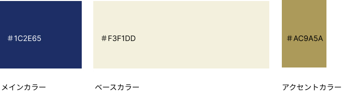
デザイン
- 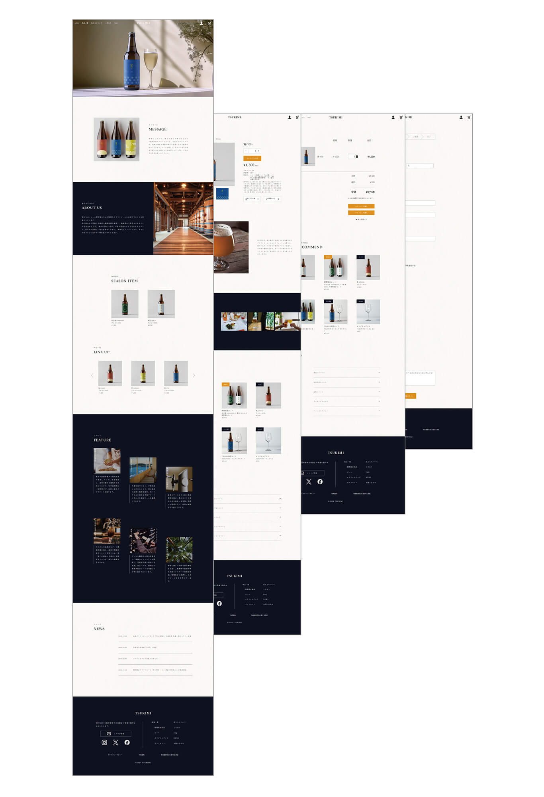
- 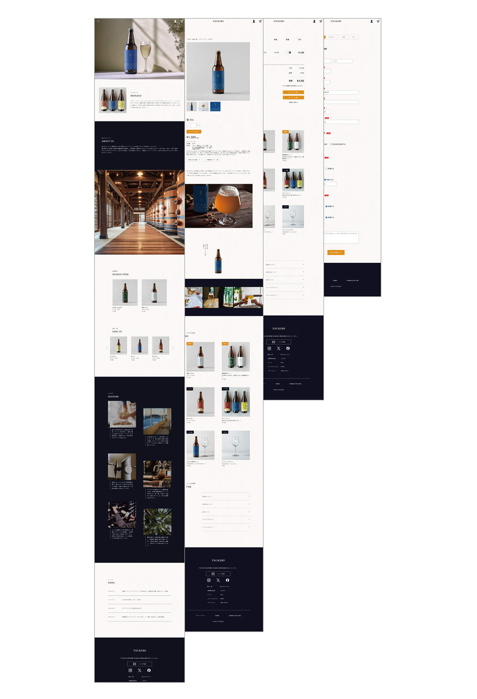
サイトマップ
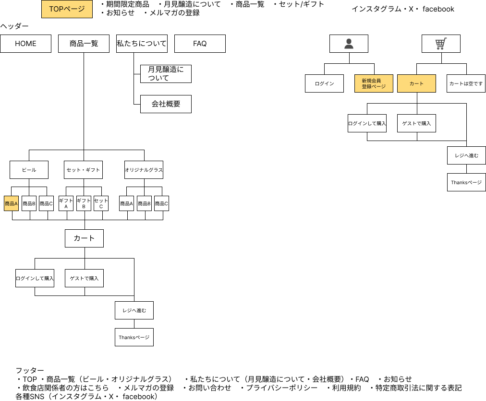
デザインカンプ
- 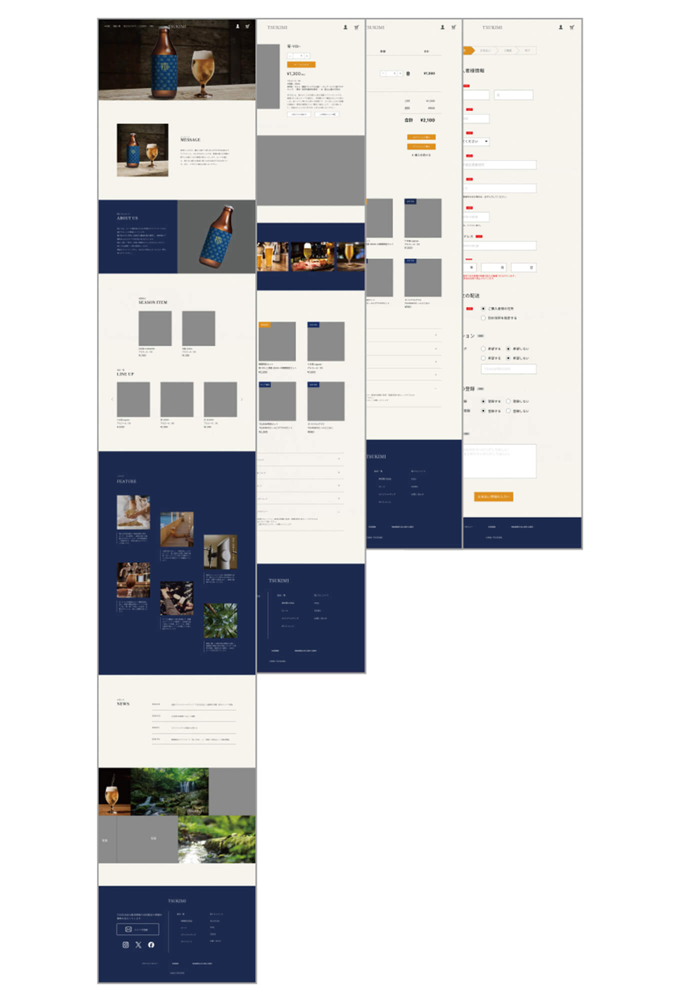
- 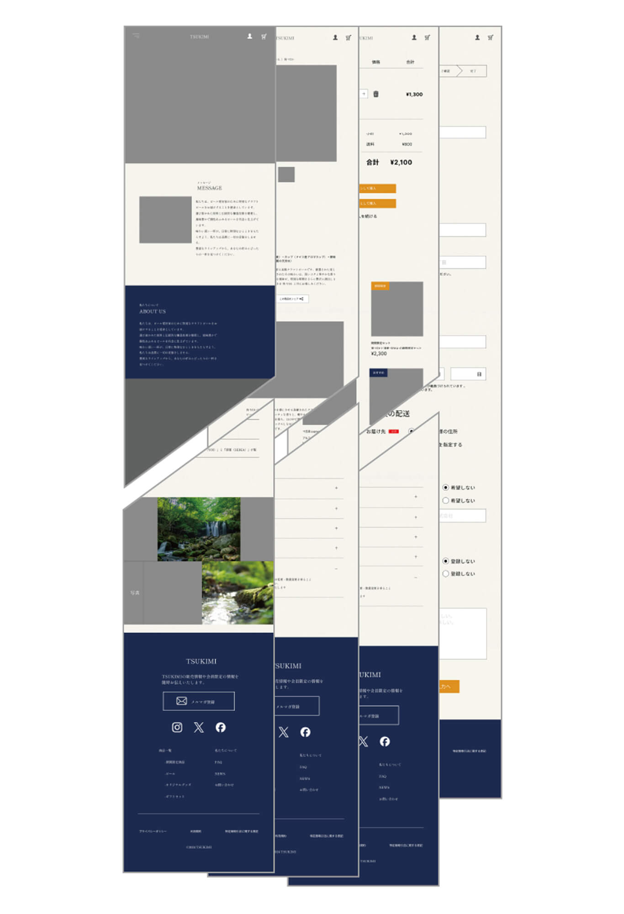
- 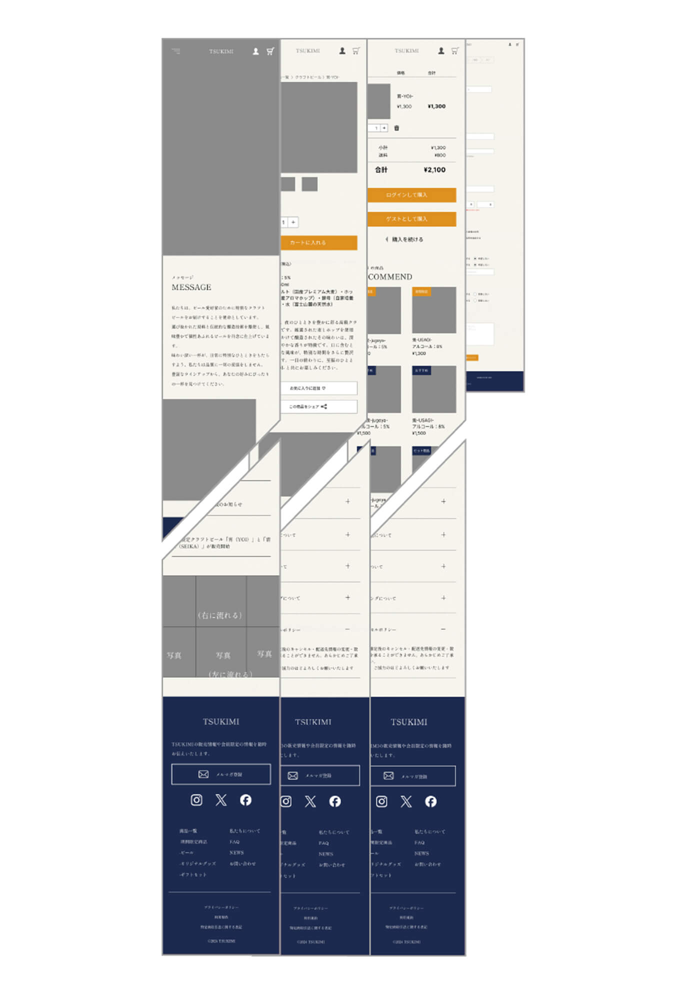
ワイヤーフレーム
- 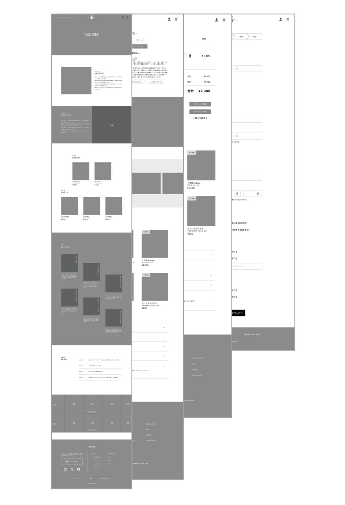
- 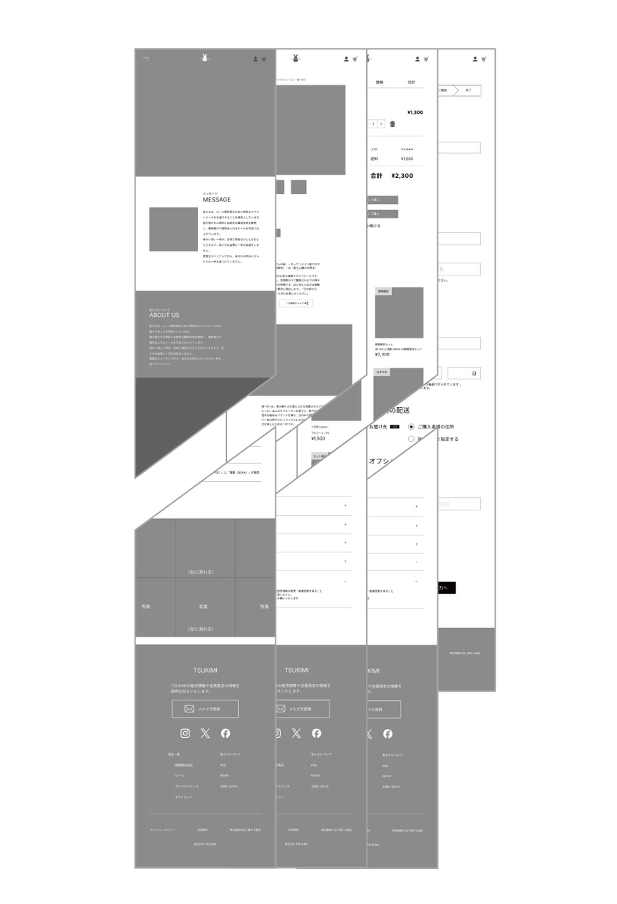
- 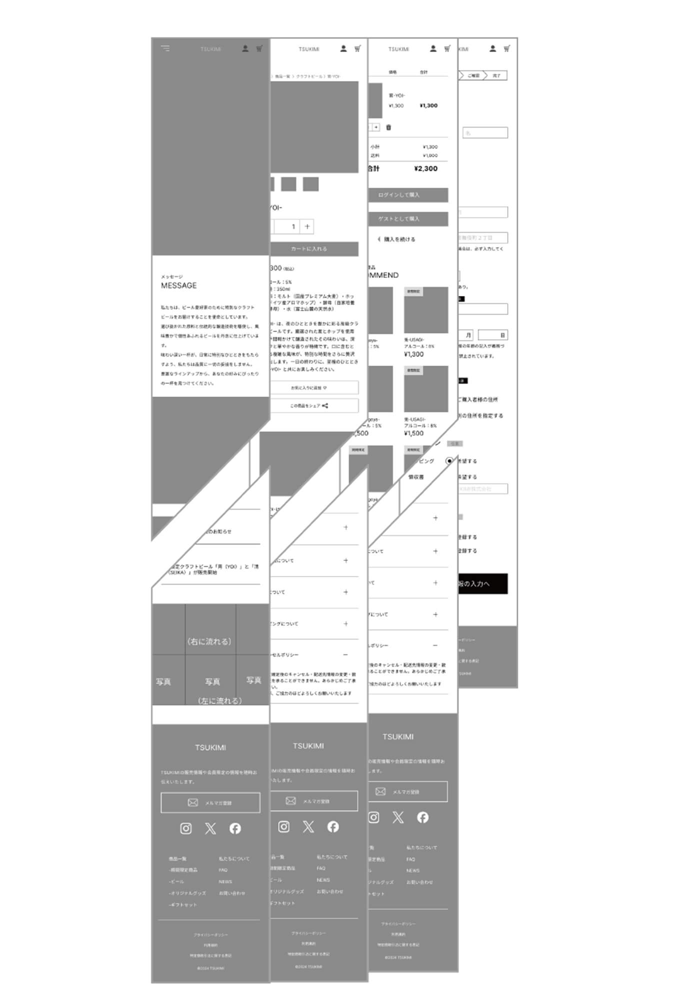
ラベル
今回、5枚のラベルを作成しました。上の3枚は月見醸造の通常商品で、企業ロゴでもある扇のモチーフを入れております。下の2枚は季節の期間限定商品です。今回は夏に販売する商品で、通常商品とはテイストを変えたラベルデザインとなっております。
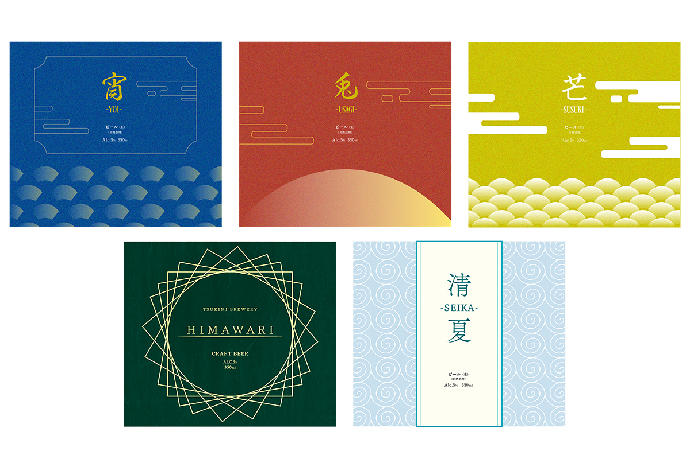
パッケージをデザインすることが初めての体験だったこともあり、ラベルを作成するのに、試行錯誤しました。特に「向日葵」という商品のラベル（緑のラベル）は、大変試行錯誤し、最初の案とは大きく違った形で完成となりました。
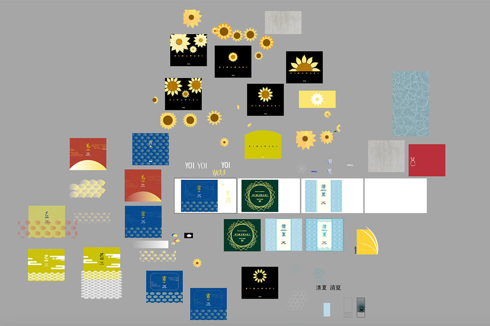
写真加工
ビールのモックアップと作成したラベルをPhotoshopで合成し、自然な加工を心がけました。
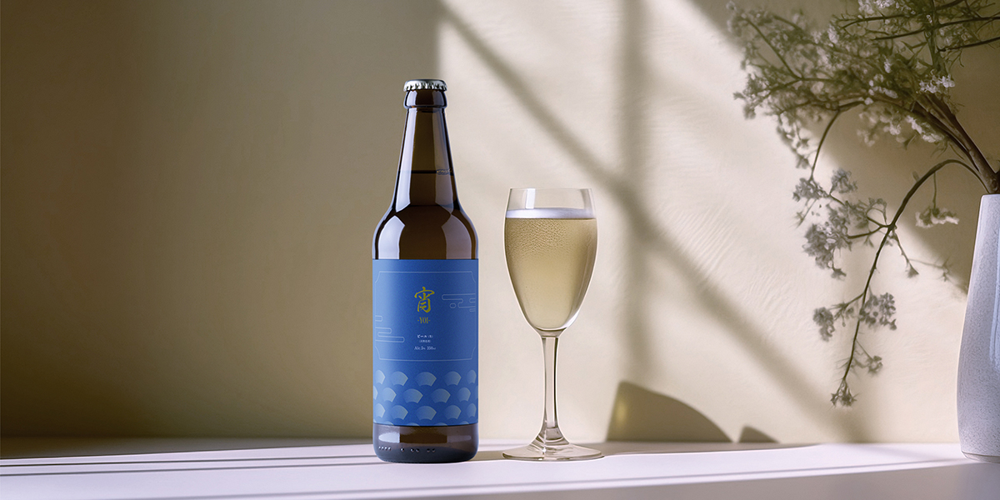
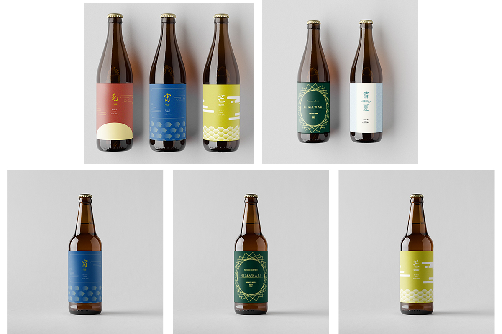
以下が加工の試行錯誤している過程です。
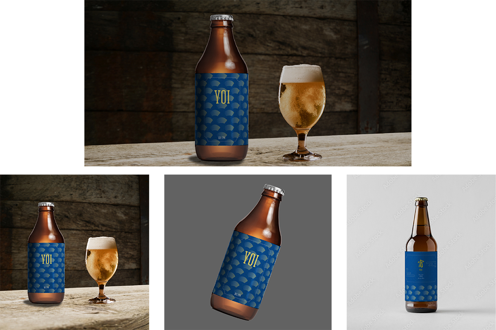
企業ロゴ
扇をモチーフとした企業ロゴです。オリジナルグラスにも印字されております。
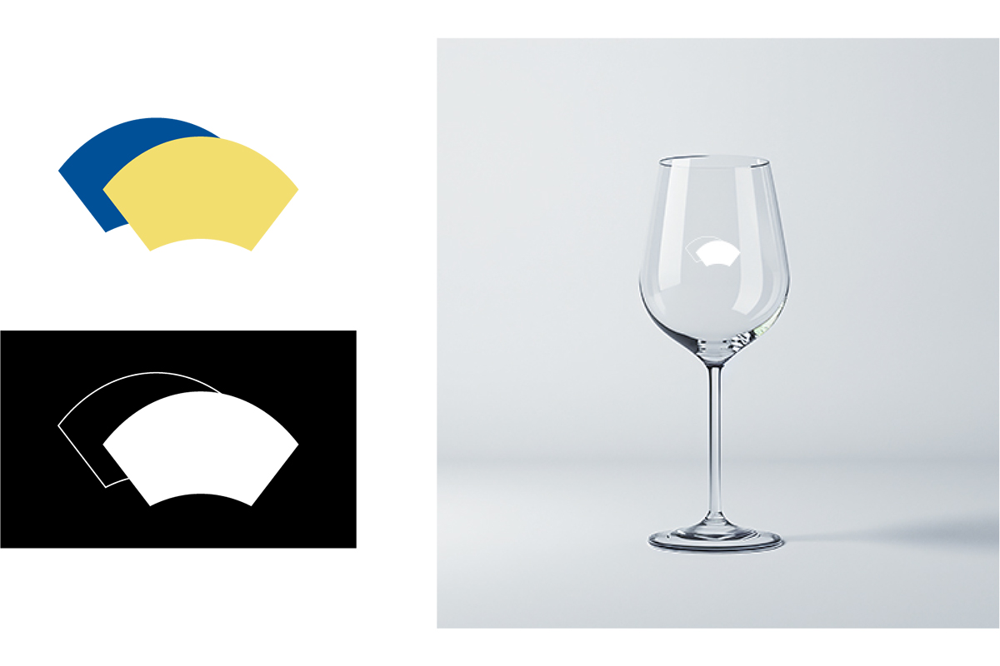
コーディングについて
今回からSCSSを使用してコードを書いております。カラーやフォントには変数をつけ、タイトルや文章などの共通部分にはmixinをつけて、コードを書く行数を減らす他、共通部分の編集をより簡潔に行うことを意識しました。
jQueryを使用し、slick、自分で調べて記述した画像が左から右へ表示する動き、アコーディオンメニューなど少しだけアニメーションを付与しました。派手にはつけすぎず、あくまで高級感を保ちつつ貧相にならない程度に動きをつけているサイトを作成しました。